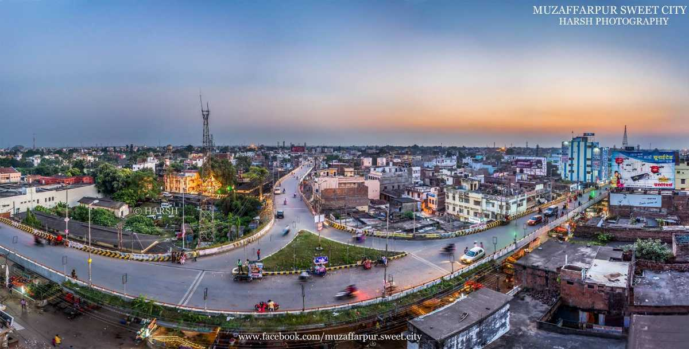

BODHGAYA

Bodh Gaya is a village in the northeast Indian state of Bihar. Considered one of the most important Buddhist pilgrimage sites, it's dominated by the ancient brick Mahabodhi Temple Complex, built to mark the site where the Buddha attained enlightenment beneath a sacred Bodhi Tree. A direct descendant of the tree sits within the complex today, along with six other sacred sites, including a lotus pond.
JALMANDIR

The Jal Mandir or Water Temple is situated in Pawapuri, in the Indian state of Bihar. It is a major pilgrimage destination of Jains and the temple is dedicated to Mahavira, the 24th Tirthankara, which marks the place of his cremation. Mahavira attained Nirvana in Pawapuri in 527 BC.
MUZAFFARPUR
Muzaffarpur is a city located in Muzaffarpur district in the Tirhut region of the Indian state of Bihar. It serves as the headquarters of the Tirhut division, the Muzaffarpur district and the Muzaffarpur Railway District. It is the fourth most populous city in Bihar.
NALANDA
Nalanda was an acclaimed Mahavihara, a large Buddhist monastery in the ancient kingdom of Magadha (modern-day Bihar) in India. The site is located about 95 kilometres southeast of Patna near the town of Bihar Sharif, and was a centre of learning from the fifth century CE to1200 CE. It is a UNESCO World Heritage Site.
NAVALAKHA
Navlakha Palace, also known as Rajnagar Palace, is a royal Brahmin palace in the town of Rajnagar, near Madhubani in Bihar, India. The palace was built by Maharaja Rameshwar Singh of Darbhanga.
RAJGIR
Rajgir is an ancient city in the northeast Indian state of Bihar. Surrounded by hills, it's known for its holy sites. Remains of the Cyclopean Wall, which encircled the city centuries ago, still stand in the center. Close by, Venu Vana park was once home to a monastery built for Buddha. The shield-shaped Japanese Temple contains a huge Buddha statue. Nearby there are hot springs believed to have medicinal properties.
VALMIKI NATIONAL PARK
Valmiki National Park is a Tiger Reserve in the West Champaran District of Bihar, India. It is the only national park in Bihar. Valmiki Tiger Reserve covers 898.45 km², which is 17.4% of the total geographical area of the district. As of 2018, there were 40 tigers in the Reserve.